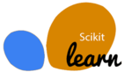
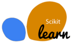

Я Паша
Data энтузиаст.

До недавнего времени я работал в фитнес индустрии, тренером-реабилитологом. Последний год я активно занимаюсь программированием на Python.
Изучаю Data Science и Machine Learning.
 

Со всеми этими библиотеками и модулями я работал не одну неделю, использую в своих проектах и фрилансе.
Закончил в Санкт-Петербурге школу N213 с углубленным изучением английского языка
4 года отучился в ИТМО на факультете международного бизнеса и права (Неполное высшее образование)
Прошел множество курсов, основые:
10 лет я работал в индустрии спорта и здоровья, успел тренировать много сотен людей
Центр Доктора Бубновского (можно кликнуть)Здесь, помимо работы старшего тренера, я помог диджитализировать данные клиентов (медицинские карты, тренировочный план, посещение и оплата), используя Excel и внутренний софт компании
Клуб FitStation (можно кликнуть)Участвовал во всех процессах создания этого клуба с момента его открытия в апреле 2019 года
Может показаться, что мой опыт не релевантен для той должности, на которую я претендую. Технически, так и есть, но я указал его для того, чтобы можно было выделить мои качества как личности:трудолюбие, умение работать с людьми, лояльность, ответственность, лидерство.
У каждой машины 5 сенсоров, каждый из которых соответсвует input нейрону сети и оценивает расстояние до 'барьера'. Пройдя через сеть, мы можем получить один из 4 вариантов действий (output): поворот налево, направо, ускорение на 10% и замедление на 10%.
Стартует 30 авто, машина сходит с трассы, если соприкоснулась с белой поверхностью (барьером).
Каждая машина, которая прошла по трассе большее расстояние, имеет выше шанс передать данные следующему поколению, через некоторое количество заездов безуспешные поколения 'вымрут'.
Новое поколение не повторяет полностью опыт своего родителя, чтобы был шанс развиться дальше (дойти до финиша). Таким образом успешных машин становится все больше и больше.
Я выбрал такой простенький вариант графического исполнения, чтобы иметь возможность создавать новые трассы мановением руки, с помощью Paint или любого другого графического редактора (я использовал GIMP).
В будущем хочу развить этот проект, используя Unity или Trackmania OpenplanetNext.
Я большой фанат английской премьер лиги.
В данном проекте я собрал данные о всех играх в сезонах 19-21, используя запросы к API
На первом дашборде можно увидеть соотношение забитых и пропущенных мячей командами на домашнем стадионе. Manchester City на Etihad Stadium забивал в три раза больше чем пропускал.
Мне всегда было интересно как сильно домашний стадион влияет на шансы команды победить.
В своем исследовании я решил не останавливаться на какой-то одной команде, а высчитал статистику всех команд играющих дома, относительно гостей.
Для сравнения я взял предыдущие (до очной встречи в сезоне) 10 игр команд и сопоставил: Количество голов, ударов; Процент точности передач и владение мячом.
Соответственно, если Team AV Goal Diff = 0.500, то команда хозяин, в среднем, забивает за игру на пол-мяча больше. А если AV Possession Diff = -10.00, то владеет на 10% меньше.
По данной статистике можно оценить была ли команда фаворитом в матче, можно оценить как часто домашний стадион помогал команде андердогу победить, как ковид и отсутствие зрителей на стадионах в сезоне 20ого года повлиял на процент побед команд дома.
Некоторые данные могут быть недоступны, например, из-за того, что команда была в дивизионе ниже, или матч находится в первой десятке сезона 19, они были статистическим фундаментом.
Данный сайт тоже можно охарактеризовать как проект, я буду обновлять его по мере участия в новых работах.
Он полностью написан мной с нуля, испольуя HTML и CSS
© paveltolkachev8@gmail.com